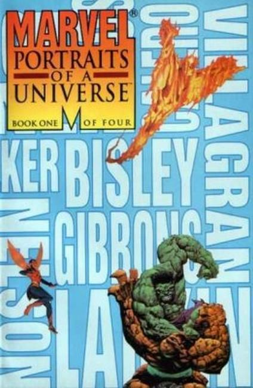
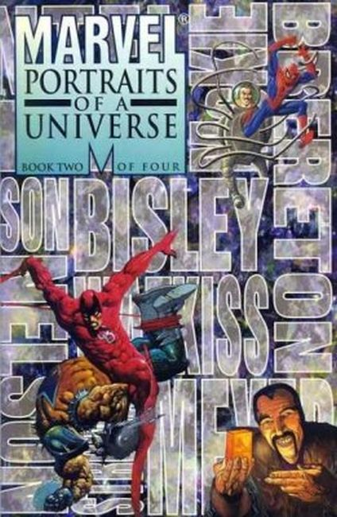
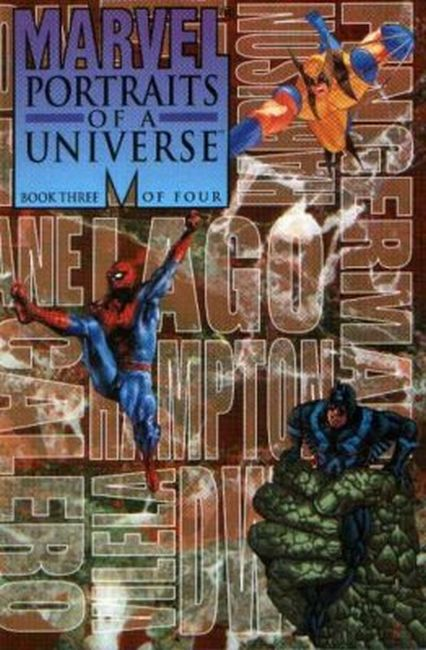
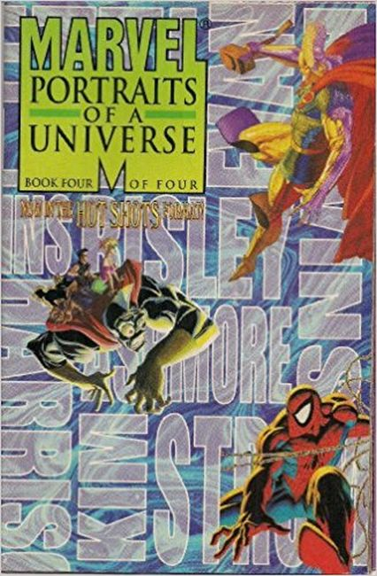

Marvel Portraits of a Universe
 
Series: 4 issues 1995
Publisher: Marvel
Book One: In The Beginning. 16 all-new full color portraits of Marvel's greatest moments from the industry's top painters, with commentary by Stan Lee. Featuring:
- The Origin of the Silver Surfer (from Silver Surfer #1) by Colin MacNeil
- Namor and the Human Torch in World War II (from Invaders #12) by Ricardo Villagran
- Captain America and Bucky with Sgt. Fury (from Sgt. Fury and His Howling Commandos #13) by Dave Gibbons
- Fin Fang Foom (from Strange Tales #89) by Mark Nelson
- Namor calls up Giganto (from Fantastic Four #4) by Terese Nielsen
- The Birth of Weapon X (from Marvel Comics Presents #73) by John Van Fleet
- The Fantastic Four meet Dr. Doom (from Fantastic Four #5) by Kev Walker
- Spider-Man catches burglar (from Amazing Fantasy #15) by Denis Calero
- Thor versus the Stone Men from Saturn (from Journey Into Mystery #83) by Lou Harrison
- The Hulk versus the Thing (from Fantastic Four #12) by Simon Bisley
- The Fantastic Four meet the Super-Skrull (from Fantastic Four #18) by Alan Craddock
- The original X-Men (from The Uncanny X-Men #1) by Ken Steacy
- The Hulk versus Thor (from Avengers #3) by Nick Percival
- The Rebirth of Captain America (from Avengers #4) by John Estes
- Magneto and the Brotherhood of Evil Mutants (from Uncanny X-Men #5) by Bob Larkin
- Spider-Man unmasked by Doc Ock (from Amazing Spider-Man #12) by Bret Blevins.
 